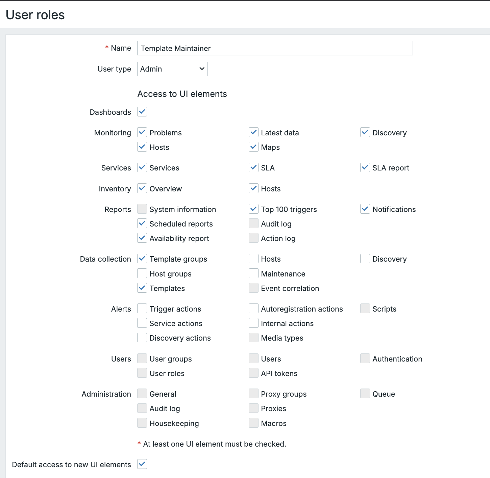
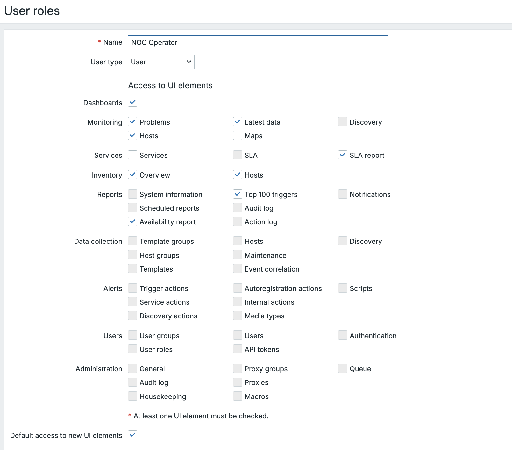

Rôles des utilisateurs
Le principe Zabbix de rôle de l'utilisateur, introduit dans Zabbix 5.2, définit ce qu'un utilisateur est autorisé à faire dans le frontend Zabbix et via l'API. Contrairement aux groupes d'utilisateurs qui contrôlent la visibilité des données (les hôtes qu'un utilisateur peut voir et/ou gérer), les rôles d'utilisateurs contrôlent la fonctionnalité de l'application (les boutons sur lesquels un utilisateur peut cliquer).
La hiérarchie des rôles
Chaque rôle d'utilisateur, qu'il soit par défaut ou personnalisé, est fondamentalement basé sur l'un des types d'utilisateurs classiques (Super Admin, Admin ou Utilisateur). Ce type d'utilisateur sert de privilège maximum autorisé pour le rôle.
Default Menu Access by User Type
User Roles can be created in the menu under the Users → User roles menu.
Or they can be set per user in the menu Users → Users → "some user" →
Permissions.
This table illustrates the default access rights granted to users based on their initial User Type before any Custom User Role adjustments are made.
| Menu Section | User | Admin | Super Admin |
|---|---|---|---|
| Monitoring | |||
| Dashboards | ✅ | ✅ | ✅ |
| Problems | ✅ | ✅ | ✅ |
| Hosts | ✅ | ✅ | ✅ |
| Latest data | ✅ | ✅ | ✅ |
| Maps | ✅ | ✅ | ✅ |
| Discovery | ✅ | ✅ | |
| Services | ✅ | ✅ | ✅ |
| SLA | ✅ | ✅ | |
| SLA report | ✅ | ✅ | ✅ |
| Inventory | |||
| Overview | ✅ | ✅ | ✅ |
| Hosts | ✅ | ✅ | ✅ |
| Reports | |||
| System information | ✅ | ✅ | |
| Scheduled reports | ✅ | ✅ | |
| Availability report | ✅ | ✅ | ✅ |
| Top 100 triggers | ✅ | ✅ | ✅ |
| Audit log | ✅ | ✅ | |
| Action log | ✅ | ✅ | |
| Notifications | ✅ | ✅ | |
| Configuration | |||
| Data collection | ✅ | ✅ | |
| Template groups | ✅ | ✅ | |
| Host groups | ✅ | ✅ | |
| Templates | ✅ | ✅ | |
| Hosts | ✅ | ✅ | |
| Maintenance | ✅ | ✅ | |
| Event correlation | ✅ | ✅ | |
| Discovery | ✅ | ✅ | |
| Alerts (Actions) | |||
| Trigger actions | ✅ | ✅ | |
| Service actions | ✅ | ✅ | |
| Discovery actions | ✅ | ✅ | |
| Autoregistration actions | ✅ | ✅ | |
| Internal actions | ✅ | ✅ | |
| Administration | |||
| Media types | ✅ | ||
| Scripts | ✅ | ||
| Users | ✅ | ||
| User groups | ✅ | ||
| User roles | ✅ | ||
| API tokens | ✅ | ||
| Authentication | ✅ | ||
| General | ✅ | ||
| Audit log | ✅ | ||
| Housekeeping | ✅ | ||
| Proxy groups | ✅ | ||
| Proxies | ✅ | ||
| Macros | ✅ | ||
| Queue | ✅ |
Customizing Role Permissions
When defining a custom role (based on Admin or User), the Zabbix
administrator can selectively revoke or grant specific rights within the
scope of the base User Type. Customization is split into three main areas:
UI Elements (Frontend Menu Access Permissions)
This section controls the visibility of menu items. By default, a role based on
the Admin type can see the Data collection menu. This allows you to hide
specific configuration sections from them.
- Example Use: You can create an
Adminrole called "Template Editor" that is allowed to see and modify Templates, but deny access to the Hosts configuration to prevent accidental host changes.
| Permission | Description |
|---|---|
| Frontend access | Allows or denies access to the entire Zabbix frontend (vs. API-only access). |
| Visibility | Toggle access to specific sections like Monitoring, Data collection, Reports, or even sub-menus like Trigger Actions or Hosts. |
Action Permissions (Functionality Control)
This is perhaps the most critical section, defining operational capabilities. These permissions control what actions a user can perform on existing data, regardless of which menu they are in.
- Example Use (NOC): Allow a NOC Operator role (based on
User) to Acknowledge problems and Close problems manually, but deny them the right to Execute scripts to prevent unauthorized command execution. - Example Use 2 (Dashboard): Allow a Manager role (based on
User) to Create and edit dashboards so they can customize their view, but deny them the ability to Acknowledge problems.
| Permission | Description |
|---|---|
| Acknowledge problems | The ability to add comments to and acknowledge active problems. |
| Close problems manually | The ability to force-close a problem, even if the underlying issue is unresolved. |
| Create and edit dashboards | Controls the ability to build and modify frontend dashboards. |
| Execute scripts | Controls the ability to execute global scripts (e.g., remote commands, inventory updates). |
API Permissions
For advanced or integration purposes, the role can specify which Zabbix API
methods are accessible. This is typically used to restrict custom scripts or
integrations to only the necessary read/write operations (e.g., allow host.get
but deny host.create).
Operational Authority for Problem Handling
The authority to manage problems and respond to incidents is critically tied to a user's access rights over the underlying Triggers and Host Groups, which are governed by their User Groups. These rules define a user's capabilities within the Monitoring sections of the Zabbix frontend:
-
To Acknowledge Events and Add Comments: To acknowledge (events) and provide comments on problems, a user must possess at least Read permission for the triggers that generated the event. This action is purely informative and does not alter the core status or configuration of the problem.
-
To Change Problem Severity or Close Problems: To change the severity of a problem or to manually close (close problem) it, the user requires Read-write permission for the corresponding triggers. These actions impact the status and state of the problem and therefore necessitate a higher, more decisive level of authority.
Practical User Role Scenarios
Providing distinct custom role examples helps illustrate the flexibility of the system.
Scenario 1: Template Maintainer Role
Objective:
Create a custom role for a technical administrator who manages templates but should not modify host configurations or system settings.
Base Role:
- Based on: Admin
- Goal: Limit exposure to production hosts while maintaining full template management.
Configuration Steps:
- Administration → Users → User roles → Create role
- General
- Role name:
Template Maintainer - Base role:
Admin - Frontend access: ✅ Enabled
- Role name:
- UI element permissions
- ✅ Data collection → Templates
- ✅ Data collection → Template Groups
- ❌ Data collection → Hosts
- ❌ Users (entire section)
- ❌ Alerts (entire section)
- ❌ Administration (entire section)
- Action permissions
- ❌ Acknowledge problems
- ❌ Close problems manually
- ✅ Create and edit dashboards (optional, for testing/POCs)
- ❌ Execute scripts
- API permissions (examples)
- Allow:
template.get,template.update,template.create - Deny: Host/system/user-management calls (e.g.,
host.create,user.update, etc.)
- Allow:
Testing:
- Log in as the user: you should see Data collection → Templates only (within config areas), while Hosts, Alerts, Users, and Administration are hidden.
- Direct URL access to hidden sections should return Permission denied.
Use Case:
Ideal in environments with segregated duties, e.g., one team maintains templates while another handles discovery and host setup.

Scenario 2: NOC Operator Role
Objective:
Create a role for a 24/7 Network Operations Center (NOC) operator who monitors problems and acknowledges them, but cannot alter configuration.
Base Role:
- Based on: User
- Goal: Empower NOC operators to handle incident acknowledgment without configuration access.
Configuration Steps:
- Go to Administration → User roles → Create role
- Set:
- Role name:
NOC Operator - Base role:
User
- Role name:
- UI element permissions (7.4 menu)
- ✅ Monitoring → Dashboards / Problems / Hosts / Latest data
- ✅ Services → SLA report
- ✅ Reports → Availability report (if used)
- ❌ Data collection (entire section)
- ❌ Users (entire section)
- ❌ Alerts (entire section)
- ❌ Administration (entire section)
- Action permissions
- ✅ Acknowledge problems
- ✅ Close problems manually (optional enable only if your workflow requires it)
- ❌ Execute scripts
- ❌ Create and edit dashboards (or enable if they must tweak NOC views)
- API permissions (examples)
- Allow:
problem.get,event.acknowledge,trigger.get - Deny: configuration-related APIs
- Allow:
User Group Binding:
Assign this role to a User Group with Read access to specific Host Groups
(e.g., Production Routers, Datacenter Switches).
This ensures:
- The operator can view and acknowledge only relevant alerts.
- No risk of unauthorized system modifications.
Use Case:
Used by first-line support teams who handle incident acknowledgment and escalation during live monitoring.

Summary: Role vs. Group
!!! info "Info" Zabbix's User Roles and User Groups work together to enforce both security and usability. Roles define what you can do, while Groups define what you can see — giving administrators fine-grained control over both the interface and data scope in multi-team monitoring environments.
!!! note Since Zabbix 7.4 there is now the Action option Create and edit
own media available. This option allows users to manage their own media
something that wasn't possible before.
It is crucial to understand that these two systems work in tandem:
- User Role: Controls the Zabbix application and UI. Can you click the "Data collection" menu?
- User Group: Controls the Host/Item data. If you click "Data collection, " which hosts do you see?
A user with the Config Admin Role will see the Data collection menu, but
if their User Group has no permissions to any Host Groups, they will see
an empty host list. This layered approach ensures both security and a tailored
user experience.
Conclusion
Zabbix's User Roles and User Groups together form the foundation of a secure and flexible access control model. User Roles define what a person can do in the frontend and API shaping the available menus, actions, and privileges. While User Groups define what data that person can see, such as hosts, templates, and triggers.
By carefully combining these two layers, administrators can tailor Zabbix to match real operational responsibilities: from read-only NOC operators to full template maintainers or automation accounts. This separation of function and visibility not only strengthens security but also creates a cleaner, more focused user experience for every role within the monitoring ecosystem.
Questions
- What is the key difference between a User Role and a User Group in Zabbix?
- How does the base User Type (User, Admin, Super Admin) limit what a custom role can achieve?
- Why might you assign different User Groups to users who share the same User Role?
- How can role-based API permissions help reduce risk in automation or DevOps workflows?